表示画面と幾何学
メニューに表示という項目があります。 ここを選ぶと、作図面の様々な表示を行うことができます。 それぞれの表示は、抽象空間の中で行われている作図の画面上への「投影」となっているのです。 通常は、どんな表示においても作図したり操作したりすることが可能です。 同時にいくつもの表示を見ることも可能です。 また、作図をある表示で変更すると、残りの表示においても作図が同時に変更されます。 特に、ユークリッド幾何の表示画面を2つ作り、縮尺を変えて並べておく、ということも可能です。
表示は様々な 幾何学と密接な関係にあります。 表示は様々な幾何学と密接な関係にあります。 表示と幾何学の節を読んでいただければ、 どの幾何学にどの表示が適当であるかを知ることができます。
ユークリッド表示
ユークリッド表示は通常の作図平面です。 シンデレラの起動時には必ずユークリッド表示が現れるようになっています。 ユークリッド幾何で作図をするのに向いています。
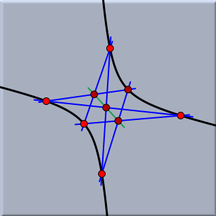 |
| ユークリッド表示でのパスカルの定理 |
ユークリッド表示にはこの表示特有の操作ボタンがあります。 そのボタンを使うと拡大縮小や平行移動をすることができます。 さらに、グリッドをつけたり、格子点へのスナップなども設定できます。
平行移動: このモードで、座標平面全体の表示を動かすことができます。 マウスのボタンを押して、そのままドラッグすると、作図全体を動かすことができます。

- 「押す、ドラッグする、離す」の一連の作業で、画面上に四角い領域を指定します。するとそ の領域が画面いっぱいに表示されるように拡大されます。
- マウスの左ボタンを図上でクリックすると、クリックした点を中心に図がわずかに拡大されます。 拡大率は1.4倍です。 シフトキーを押しながら(左)クリックすることにより、縮小することもできます。

- 「押す、ドラッグする、離す」の一連の作業で、画面上に四角い領域を指定します。すると、これまでの描画面がそ の領域に収まるように縮小されます。
- マウスの左ボタンを図上でクリックすると、クリックした点を中心に図がわずかに縮小されます。 縮小率は0.7倍です。 シフトキーを押しながら(左)クリックすることにより、拡大することもできます。
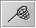
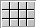
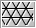
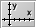
スナップ: スナップモードにします。 このモードではマウスはグリッドの上に(まるで磁石のように)吸い付けられます。 このモードは正確な図形を描くのに便利です。 このモードを選択すると、はじめは自動的にグリッドと座標軸が表示されます。これらは、その後それぞれ非表示にすることができます。
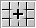
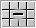
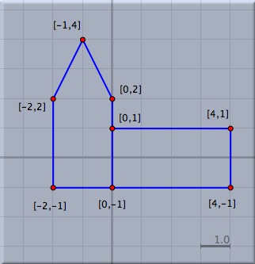 |
| スナップモードを使って描かれた正確な図形 |
球面表示
球面表示は、ユークリッド平面から球面へ射影された像です。 射影の原点は球の中心であるとしています。 ただし、ユークリッド平面は球面の中心を通っていないものと仮定します。 (訳註：ユークリッド平面の点に対して、球の中心とを結ぶ直線は球面と2回交わります。)
 |
| 平面から球面への射影 |
この射影によって平面状の各点は球面上の1組の対蹠点に写されます。各直線は大円に写さ れます。結合の構造は保存されます。では、無限遠にある要素を操作することがで きます。球面表示にしたときの最初に表示される円の境界が無限遠です。
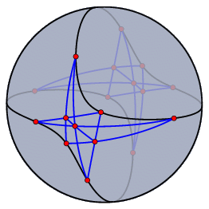 |
| 球面表示におけるパスカルの定理 |
球面表示は、楕円幾何学を表示するのに自然な表示方法です。 楕円幾何学における2直線の角度は球面上での角度と一致します。 楕円幾何学における2点間の距離は、球面上でその2点を通る大円に沿った球面上の長さに 一致します。ただし対蹠点を同一視していることを念頭に置いてください。
球面の回転: 球面表示では球面を回転させることが可能です。 「押す、ドラッグする、離す」という動作で球面を回転させることができます。
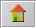
拡大率スライダー: 球面表示のウィンドウにはスライダーがついており、球面とユークリッド平面との距離を調節で きます。このことによって作図全体の大きさをほどよく表示することができます。
双曲表示
双曲表示は双曲幾何学を表示するのに最も適しています。 実際、双曲表示のウィンドウを出す時には、双曲幾何学の作図をしている時がほとんどでしょう。 双曲表示とはすなわち、双曲幾何学のポアンカレディスク・モデルを表示したものに他なりません。 このモデルでは、双曲平面の有界部分が円の内側で表されます。 このモデルにおける直線とは、この円に直交するような円弧で表されます。 2直線のなす角は、ユークリッド平面と等角、つまり、円弧と円弧の間の(ユークリッドの意味での)角度と一致します。 2点間の距離については、2点のうちの1つが境界の上にあるならば、その距離は無限大になります。 (訳註：双曲距離の定義はここでは省略します。) つまり境界上の点は無限遠点です。 もし、ポアンカレディスク・モデルの上をまっすぐに歩いたとすると、外から見れば円弧に沿 って歩いているのであり、しかも境界にたどり着くことは不可能なのです。 というのは、境界に近づくほど、一歩の長さがユークリッドの意味でどんどん短くなってしまって、いつまでたっても境界につくことはできなくなっているのです。
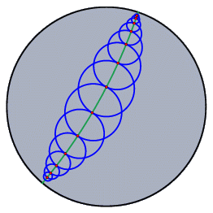 | 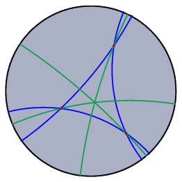 | |
| 半径の等しい双曲円の列 | 双曲3角形の3本の垂線は1点で交わる | |
極ユークリッド表示と極球面表示
極線、極点は射影幾何学においては重要な概念です。 直線と点とは完全に対称な立場にあるので、点と直線の結合に関する命題すべてで、点と直線 の役割を逆にした対応する「極命題」が成り立ちます。
シンデレラでは対応する極を極ユークリッド表示と極球面表示の2つで見ることができます。 シンデレラでの「極」とは単位行列に関する極を意味します。 代数的に言うと、平面上の点の「同次座標」をそのまま直線の係数だと思ったものを極直線と定義するわけです。 (訳註：つまり点(a:b:c)の極を直線 ax + by + c =0 で定義するのです。) 逆も同様です。 幾何的に言うには球面表示で説明するのがよいでしょう。 1つの点に対しそれを北極であると考えたときの赤道にあたる直線が極直線となるのです。 逆に、球面上の直線、つまり大円を与えた時には、それを赤道だと思って北極点を探せば、それが極点になります。 次の図は同じ作図を球面表示と極球面表示したものの対比です。
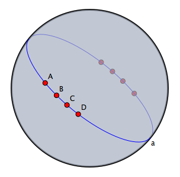 | 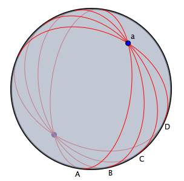 | |
| この図が・・・ | 極表示ではこうなる | |
極表示では、要素を選択することはできますが、動かすことはできません。 もし極表示の中で要素を動かしたかったら、もとの表示に戻り動かすしかありません．
式による表示
式による表示は、作図の手順を文字や式で記録したものです。 図中の各要素は、式による表示のウィンドウの表の1行において言葉で説明されています。
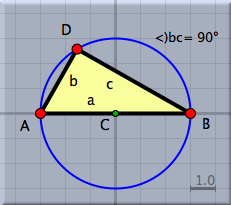 |
| ターレスの定理の絵 |
各行にはその要素を連想させるようなアイコンがついています。 そのアイコンは図上の要素の大きさや色や形を指し示しています。 こうすることによって、図上の要素と対応がつけやすくなっています。
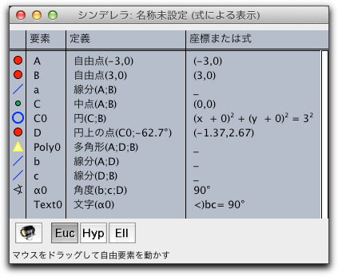 |
| ターレスの定理の式による表示 |
式による表示の1つの行は4つの項目からなっています。 1列目にはアイコンが示されています。 2列目には要素の名称が書かれています。 これはラベルを示します。 これらのラベルは各要素に固有なものになっています。 3列目にはその要素がどのように定義されているかが示されています。 4列目にはその要素が現在置かれている場所や式が書かれています。 ほとんどの場合、これは座標形式で表現されます。 メニューのフォーマットという項目で、この4列目の項目の表示の仕方を変更することができます。
式による表示のウィンドウの中に出てくる2〜4列目の文字列は、 テキストを加える モードで参照することができます。
この4つの項目は縦罫線で区切られています。 この縦罫線を「押す、ドラッグする、離す」という一連の動作で動かして列の幅を変えることができます。 もし、要素の数が多くて表示しきれない場合は、右端の白いスクロールバーを操作すれば下のほうまで見ることができます。
一般的な機能
それぞれの表示には最下段にその表示固有のツールバーがついています。 全ての表示に共通しているものは次のとおりです。
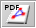
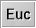
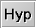
幾何学を選択する: これらのボタンで、幾何学を変更することができます。 どの作図も、このボタンのうちどれが押されているかを参照します。 詳しくは 幾何学 と 理論的背景を参照してください。
(阿原)
Page last modified on Friday 24 of February, 2012 [23:50:05 UTC].
The original document is available at
http://doc.cinderella.de/tiki-index.php?page=ViewsJ